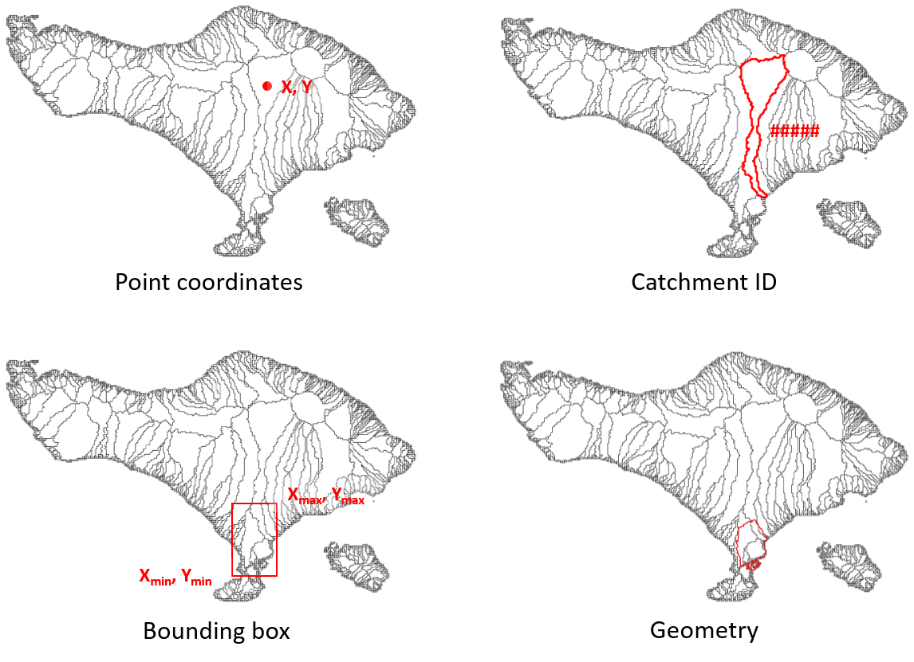

Defining a model region#
To setup a model for a specific region, you can use several geospatial or hydrographic region definitions which are explained in this chapter.
The syntax is interpreted using the parse_region() method.
For hydrographic regions see also the delineate basins example and get_basin_geometry() method.
Note
All x and y coordinates in the point and bbox are in the EPSG:4326 (WGS84) coordinate reference system.
Geospatial region#
Bounding box (bbox):
{'bbox': [xmin, ymin, xmax, ymax]}Geometry file (geom):
{'geom': '/path/to/geometry_file'}Based on another model:
{'<model_name>': '/path/to/model_root'}Based on a raster file:
{'grid': '/path/to/raster_file'}
Hydrographic region#
The following hydrographic regions are supported:
basin
subbasin
interbasin
Basin: is defined by the entire area which drains to the sea or an inland depression. To delineate the basin(s) touching a region or point location, users can supply the following:
One point location:
{'basin': [x, y]}More point locations:
{'basin': [[x1, x2, ..], [y1, y2, ..]]}Bounding box:
{'basin': [xmin, ymin, xmax, ymax]}Geometry file:
{'basin': '/path/to/geometry_file'}Single unique basin ID:
{'basin': [ID1]}Several unique basin ID:
{'basin': [ID1, ID2, ..]}To filter basins, variable-threshold pairs to define streams can be used in combination with a bounding box or geometry file, e.g.:
'uparea':30to filter based on streams with a minimum drainage area of 30 km2 or'strord':8to filter basins based on streams with a minimal stream order of 8. The variables should be available in the dataset on which the delineation is based, e.g. Hydro MERIT.
{'basin': [xmin, ymin, xmax, ymax], '<variable>': threshold}To only select basins with their outlet location use
'outlets': truein combination with a bounding box or geometry file
{'basin': [xmin, ymin, xmax, ymax], 'outlets': true}
Subbasin: is defined by the area that drains into an outlet, stream or region. Users can supply the following:
One point location:
{'subbasin': [x, y]}More point locations:
{'subbasin': [[x1, x2, ..], [y1, y2, ..]]}Bounding box:
{'subbasin': [xmin, ymin, xmax, ymax]}Geometry file:
{'subbasin': '/path/to/geometry_file'}To speed up the delineation process users can supply an estimated initial bounding box in combination with all the options mentioned above. A warning will be raised if the bounding box does not contain all upstream area.
{'subbasin': [x, y], 'bounds': [xmin, ymin, xmax, ymax]}The subbasins can further be refined based one (or more) variable-threshold pair(s) to define streams, as described above for basins. If used in combination with point outlet locations, these are snapped to the nearest stream which meets the threshold criteria.
{'subbasin': [x, y], '<variable>': threshold}
Interbasin: is defined by the area that drains into an outlet or stream and bounded by a region and therefore does not necessarily including all upstream area. Users should supply a bounding region in combination with stream and/or outlet arguments. The bounding region is defined by a bounding box or a geometry file; streams by a (or more) variable-threshold pair(s) and outlet by point location coordinates. Similar to subbasins, point locations are snapped to nearest downstream stream if combined with stream arguments.

{'interbasin': [xmin, ymin, xmax, ymax], '<variable>': threshold}
{'interbasin': /path/to/geometry_file, '<variable>': threshold}
{'interbasin': [xmin, ymin, xmax, ymax], '<variable>': threshold, 'xy': [x, y]}To only select interbasins based on the outlet location of the entire basins use
'outlets': true
{'interbasin': [xmin, ymin, xmax, ymax], 'outlets': true}